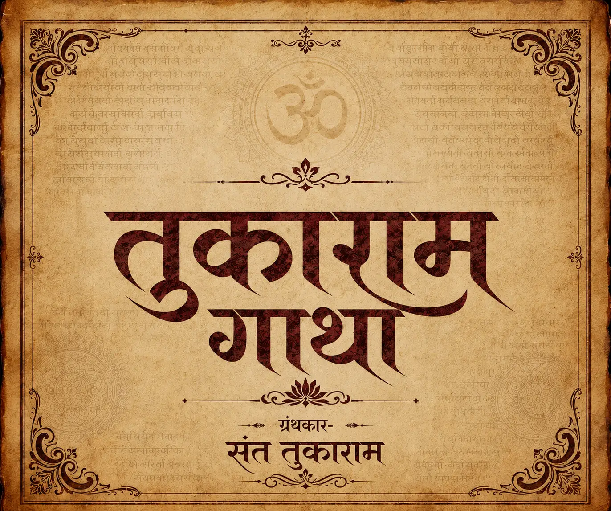

भावार्थ दीपिका (ज्ञानेश्वरी)
भगवद्गीतेचा अत्यंत सोपा आणि रसाळ मराठी भाषेत केलेला सुवर्ण अनुवाद. १८ अध्यायांचे आणि ९,०००+ ओव्यांचे महाकाव्य.
सार्थ ज्ञानेश्वरी वाचा
श्रीमद् दासबोध
प्रपंच आणि परमार्थ यांचा सुवर्णमध्य साधणारा अप्रतिम ग्रंथ. विसाव्या दशकात विभागलेला, व्यावहारिक आणि अध्यात्मिक ज्ञानाचा सागर.
सार्थ दासबोध वाचा
श्रीमद् एकनाथी भागवत
श्रीमद्भागवताच्या अकराव्या स्कंधावर संत एकनाथांनी लिहिलेली रसाळ टीका. भक्ती, ज्ञान आणि वैराग्याचा त्रिवेणी संगम.
ग्रंथ वाचन सुरू करा
अमृतानुभव (अनुभवामृत)
माऊलींच्या स्वतःच्या स्वतंत्र तत्वज्ञानाचा आणि सर्वोच्च अद्वैत आत्मज्ञानाचा आविष्कार घडवणारा चिन्मय ग्रंथ.
ग्रंथ वाचन सुरू करा
तुकाराम महाराज गाथा
वारकरी संप्रदायाचा मुख्य पाया असलेला ४,५०० पेक्षा जास्त अभंगांचा प्रासादिक आणि जनमानसाच्या जिभेवर रेंगाळणारा महासंग्रह.
सार्थ गाथा वाचा
चांगदेव पासष्टी
१४०० वर्षे जगलेल्या चांगदेवांचा गर्व हरण करून, त्यांना अवघ्या ६५ ओव्यांमध्ये माऊलींनी उपदेशिलेले शुद्ध ब्रह्मज्ञान.
ग्रंथ वाचन सुरू करा
संत एकनाथ महाराज हरिपाठ
भगवंताच्या नामस्मरणाचे महत्त्व सांगणारा आणि आत्मबोधाची सोपी वाट दाखवणारा नाथ महाराजांचा २५ अभंगांचा भावपूर्ण हरिपाठ.
सार्थ हरिपाठ वाचा
संत तुकाराम महाराज हरिपाठ
जगद्गुरू तुकोबांच्या लेखणीतून उतरलेला, संसार सुकर करून पांडुरंग चरणी चित्त स्थिर करणारा अत्यंत प्रासादिक हरिपाठ संग्रह.
सार्थ हरिपाठ वाचा
गुरुपरंपरेचे अभंग
आदिनाथ-मत्स्येंद्रनाथ-गोरक्षनाथ ते गहिनीनाथ-निवृत्तीनाथ-ज्ञानेश्वर आणि बाबाजी चैतन्य-तुकाराम महाराज यांच्या पवित्र गुरुपरंपरेचा गौरव करणारे अभंग.
परंपरा अभंग वाचा
सार्थ श्रीमद्भगवद्गीता
भगवान श्रीकृष्णांनी अर्जुनाला कुरुक्षेत्रावर दिलेला पावन व वैश्विक ज्ञानोपदेश.
ग्रंथ वाचन सुरू करा
भावार्थ रामायण
संत एकनाथ महाराजांनी रचलेले प्रभू श्रीचंद्रांच्या चरित्रावरील भावपूर्ण व अध्यात्मिक रामायण.
ग्रंथ वाचन सुरू करा
चतुःश्लोकी भागवत
केवळ चार श्लोकांमध्ये संपूर्ण भागवत पुराणाचा गूढ अर्थ सांगणारा नाथांचा प्रथम ग्रंथ.
ग्रंथ वाचन सुरू करा
ग्रामगीता
राष्ट्रसंत तुकडोजी महाराजांनी सुखी, समृद्ध व आदर्श ग्रामरचनेसाठी दिलेली जीवनगाथा.
ग्रंथ वाचन सुरू करा
रुक्मिणी स्वयंवर
प्रभू श्रीकृष्ण आणि रुक्मिणी माता यांच्या दैवी विवाहाचे आणि गृहस्थाश्रमाचे रसाळ वर्णन.
ग्रंथ वाचन सुरू करा